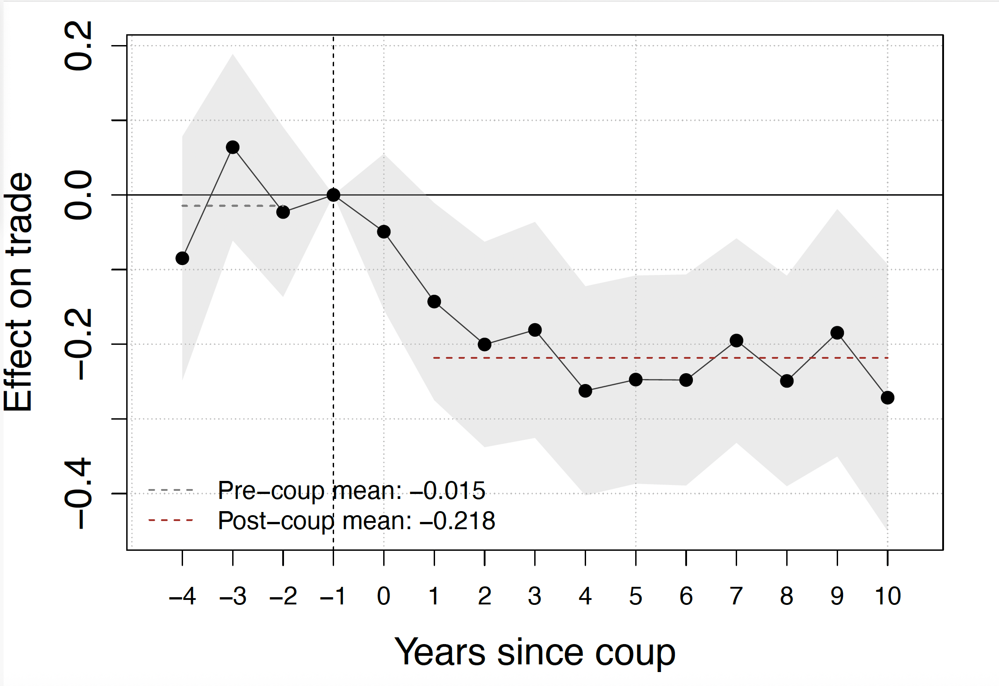
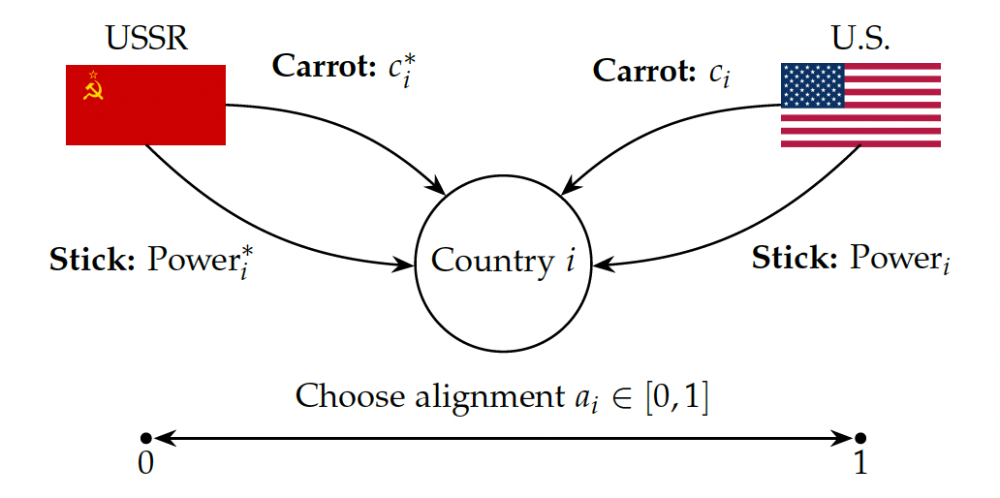
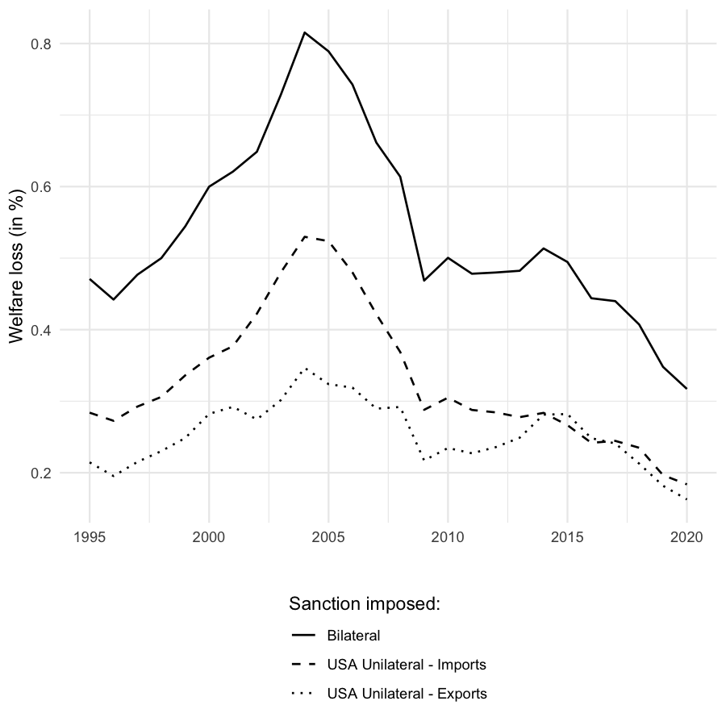
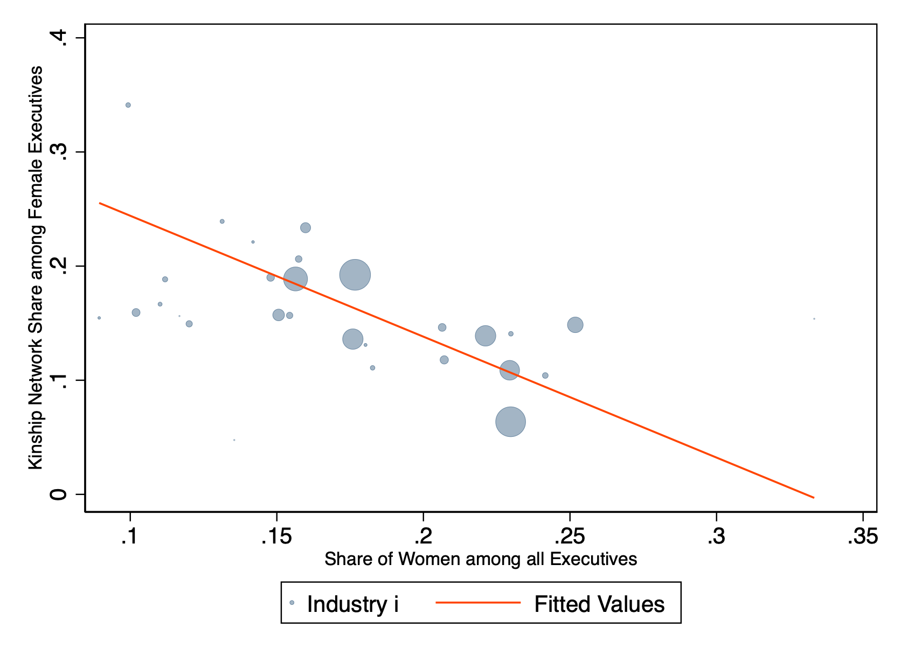

Welcome!
I'm a Ph.D. candidate in Strategy and Business Economics at the Sauder School of Business at the University of British Columbia. My research lies at the intersection of International Trade, Political Economy, and Economic History.
My job market paper estimates the trade costs of geopolitical rivalry during the Cold War, using successful versus failed coups to identify the causal effect of ideology on trade flows. This research is supported by the UK Foreign, Commonwealth and Development Office.
I have taught Environment, Society and Government (COMM 394) at Sauder, for which I received the UBC Killam Graduate Teaching Award.
My dissertation committee consists of Keith Head, Ayumu Ken Kikkawa, and Nathan Nunn.
You can find my CV here. You can reach me at nicolas.wesseler@sauder.ubc.ca.
Research
Working Papers

Abstract
How does geopolitical alignment affect international trade? We study this question using the Cold War as a natural experiment in geopolitical fragmentation. Using detailed bilateral trade data from 1945–1990, we document that politically distant countries faced substantially higher trade frictions. The tariff equivalent of the ideological gap between the United States and Soviet Union was approximately 21%, rising to 38% for direct superpower relationships, comparable to the trade costs of armed conflict. To establish causality, we exploit sudden shifts in political alignment caused by coups, comparing successful and failed attempts. We provide evidence that ideology shaped trade flows independently of observable policy instruments such as sanctions and trade agreements. Critically, effects disappear after the fall of the Iron Curtain, demonstrating that these barriers reflected active policy choices under superpower rivalry rather than permanent features of political systems. Embedding our estimates in a quantitative trade model, we find that fragmentation imposed the heaviest welfare costs on non-aligned countries, who faced political distance barriers to both blocs simultaneously. We further show that the Western Cold War bloc was economically self-reinforcing, a property the contemporary U.S.–China rivalry does not share.

Abstract
Hegemonic powers use economic tools to influence the geopolitical alignment of third countries. We develop a model in which two competing hegemons use direct payments (carrots) and economic threats (sticks) to influence third countries. Guided by the model, we measure carrots and sticks using historical data from the Cold War. We use our measures to empirically estimate the effects of carrots and sticks on geopolitical alignment. These tools create political alignment, but are expensive. We combine the model with the empirical estimates to compute the geopolitical return on foreign aid and evaluate the consequences of the USAID shutdown for the modern U.S.–China competition.
Publications

Abstract
What determines the success or failure of economic sanctions? Theoretical research emphasizes the anticipated costs to both sender and receiver countries, but empirical findings remain inconclusive. This study introduces a novel measure of sanction costs by developing a bilateral reliance metric, which quantifies the welfare losses incurred when trade ties are severed. The metric is derived from an international trade model incorporating multiple sectors, sector-specific trade elasticities, and intermediate production networks. Results show that while the absolute magnitude of bilateral reliance depends on the complexity of the trade model, its changes over time remain stable. Empirically, I find little evidence that the economic costs to the receiver country influence sanction success. However, there is suggestive evidence that lower costs to the sender increase the likelihood of success, a finding that holds across different model specifications, samples, and databases.

Abstract
Leveraging data on firms operating in the Gulf Cooperation Council (GCC) countries and a novel measure of family ties among firm executives, we show the quantitative importance of kinship ties for female executives in settings and industries characterized by low female representation. Our findings suggest that kinship ties may bring women into executive networks, what we call "the glass web," that make up the proverbial glass ceiling which has traditionally kept women out of business leadership. We combine our executive-level data with administrative employer–employee matched data for Saudi Arabia to show that greater representation of women among firm executives, with or without a kinship tie, is associated with more gender-equal outcomes at the firm, including greater female employee share and smaller gender wage gaps.
Work in Progress
Teaching
Instructor — University of British Columbia
-
COMM 394: Environment, Society and Government — Undergraduate, Summer 2025
Evaluation: 4.9 / 5.0 · UBC Killam Graduate Teaching Award 2025/2026
Teaching Assistant — University of British Columbia
- COMR 493: Strategic Management in Business — Undergraduate, Winter 2024, 2023
- COMR 491: Strategic Management — Undergraduate, Winter 2023
- COEC 498: Advanced International Business Management — Undergraduate, Winter 2023
- COMM 498: International Business Management — Undergraduate, Winter 2022
- ECON 455: International Trade — Undergraduate, Winter 2022, 2023